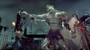

Batman Video Games
There are plenty of amazing video games about Batman.
The main series most people know is the 'Batman: Arkham' series. It contains four games. Arkham Asylum, Arkham Origins, Arkham City, And Arkham Knight. It creates its own world where you have a main goal of saving the city from one of the many antagonists, but between missions you have the oppurtunity, and sometimes the obligation, to participate in side missions.
The Arkham series follows a chronological order. Arkham Origins is the first in order, and it is a game about the beginnings of the villains as well as the beginnings of Batman himself. There is Riddler, Joker, Black Mask, and minor characters such as Copperhead, the Electrocuitioner, Deadshot, Firefly, and many many others. The main goal of this game is to survive through the assassins sent to kill Batman and take down Joker. This is my favorite of the series. This is my favorite versions of Batman in general.

The next game, Arkham Asylum, follows the plot of Joker taking over an island dedicated to containing super villains and creating "Titans." This is using the drug Bane uses to beef himself up. Your goal is to yet again, take down Joker and destroy the drug. This is my least favorite of the series. The map is vast and the riddler quest, (which is a feature in every game,) Was the best part of this one. You collect riddles and trophies as you do everyother game, but you also collect records of the villains being interviewed. The game ends with Batman beating up a Titan infected Joker.
The following game is Arkham Ciy. Joker poisons you with his own blood, which was deadly due to the following game, and it is Batman's responsibilty to find a cure, not to save Joker and himself, but to save the City that was also poisoned. The Titan had poisoned Joker's blood and Joker shipped his blood to local hospitals for donations. The riddler has his own little side quest where you have to save multiple hostages by solving his riddles. He gets upset if you succeed and starts cheating. The climax of the game is the boss battle with 'Joker.' Somehow Joker got cured, but you soon learn this was a lie and clayface (if unknown, read his profile on the character page) had been acting as a healthy Joker to trick Batman. The cure gets broken in the fight and Joker dies, Batman intended to cure Joker, but it didn't happen. The game ends with Batman carrying Joker's corpse away from the theater, mimicking the painting shown at the beginning of the game.
The final game, Arkham Knight, I have yet to play.
There is also the telltale series. This is a choice based game and completely changes the characters of Joker and Harley Quinn. This was my first ever Batman game.
Batman Comics
Batman comics is by far the most entertaining media in my opinion. They are the source of Batman and they always either stay true to the characters personalities or they create genuinely entertaining new strorylines. Here are some of my favorite comics:
- Batman: Zero Year
- Batman: Europa
- Death of the Family
- Batman: Endgame
Batman: Zero Year is my second favorite comic ever. I love the Riddler's character and this comic perfectly captures it. He is so egotistical that he dooms himself whenever fighting against Batman. He is snarky and obsessive and has zero limits, so long as he wins.
The other three comics all dive into the complexity of Batman and Joker's dynamic. Death in the family focuses on Joker's obsession with Batman and Batman: Endgame explores Batman's reliance on Joker. In fact, Batman chooses to die with Joker during Batman: Endgame, even calling him his friend.